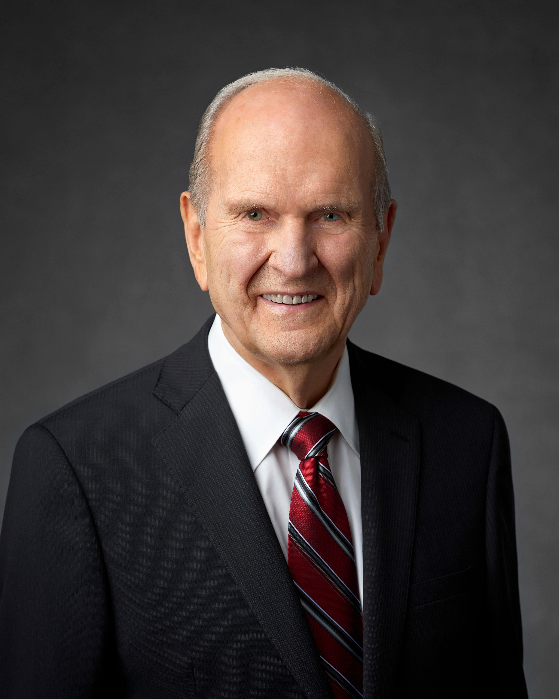

About His Life

Russell M. Nelson was a surgeon before becoming an apostle of The Church of Jesus Christ of Latter-day Saints. He dedicated much of his life to helping people through medicine and his faith. He later became the 17th President of the Church and taught people to follow Jesus Christ.
Why He Inspires Me
President Nelson inspires me because of his dedication to God and his willingness to serve others. His teachings remind me that making good choices and having faith can help us become better people. I also admire how he encouraged young adults to focus on their eternal identity and relationship with God.
My Favorite Quote
"Think celestial!"
This quote reminds me to think about my future and make choices that bring me closer to Heavenly Father.